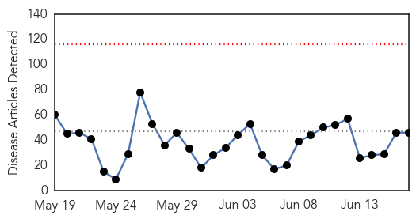
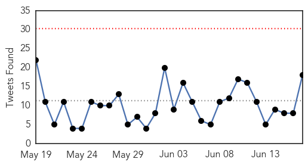

Ebola
30-Day Web Trend
0 alerts, 0 warnings

30-Day Twitter Trend
0 alerts, 0 warnings

Article Locations

Article Confidences

Top Articles:
- 1.000
- After Ebola, Is the US Ready for MERS?
- 1.000
- Over 300 Ebola deaths traced back to a healer in Sierra Leone
- 0.999
- Ebola genetic code analysed to show evolution of worst ever outbreak
- 0.999
- Blood, Sweat and Tears: Study Will Watch Ebola Survivors
- 0.998
- PHE study finds Ebola virus mutated slower than first thought
- 0.998
- Liberia makes travel alert
- 0.998
- Study of Ebola survivors opens in Liberia
- 0.998
- Study of Ebola Survivors is Underway in Liberia
- 0.997
- Ebola virus didn't mutate as fast as previously thought, study finds
- 0.996
- MERS Outbreak in S.Korea a 'Wakeup Call' — Naharnet
- 0.996
- The Courier UN: Spread of MERS in South Korea isn’t global emergency
- 0.994
- UN: Spread of MERS in South Korea isn't global emergency
- 0.990
- In Guinea, mobile health clinics fight more than Ebola
- 0.989
- Jewish & Israel News Algemeiner.com
- 0.987
- US relaxes Ebola screening for Liberians
- 0.987
- Customs ramping up airport efforts to keep out deadly MERS virus
- 0.985
- Canada Needs to Be Better Prepared, Says Expert
- 0.984
- UK expert warns of disaster if lessons are not learned from Ebola outbreak
- 0.981
- Sierra Leone's Children Exploited Due To Ebola Outbreak - Aid Groups
- 0.977
- Temporal and spatial analysis of the 2014-2015 Ebola virus outbreak in West Africa : Nature : Nature Publishing Group
- 0.976
- University of Texas Medical Branch
- 0.968
- UK expert warns of disaster if lessons are not learned from Ebola outbreak
- 0.968
- Study shows how Ebola has evolved during the West Africa outbreak
- 0.957
- Ebola vaccine test has not started in Ghana - Segbefia
- 0.956
- Ebola vaccine test has not started in Ghana
- 0.951
- Doctor who fought Ebola inspires Academy of Notre Dame grads
- 0.931
- Minister Raps MPs Over Ebola For Phone
- 0.923
- Sierra Leone launches new operation to eradicate Ebola
- 0.920
- UCF director prepares campus for emerging diseases
- 0.901
- After 33 years, Dr. Kumar ends his shift
- 0.883
- Chevron Launches Infectious Disease Control Center in Liberia
- 0.876
- Dr. Ireland Back From Ebola Teaching
- 0.854
- Necessary preventative measures to combat Hantavirus — 5 facts to know
- 0.853
- This New App Can Tell You If The People Around You Are Sick
- 0.849
- PREVAIL Launches Ebola Natural History Study Today
- 0.849
- Experts meet to discuss a range of public health issues in the African Region - World
- 0.786
- A Call to Scale-Up Community Health Workers
- 0.779
- British Embassy hosts afternoon tea to thank Korean medical personnel
- 0.765
- Sweden Remains ‘Strong Partner’ To Liberia’s Recovery- Envoy Wallstrom
- 0.714
- Infectious Disease Control Center at JFK
- 0.710
- JFK, Chevron sign agreement
- 0.708
- Parliament summons Alex Dodoo over 'Ebola attack'
- 0.651
- Record drought in North, deadly pestilence in the South
- 0.647
- APC political activist urges Sierra Leoneans in Gambia to be law-abiding
- 0.563
- President Reaffirms Commitment to African Peer Review
- 0.560
- Preventing brain disease by eating brains? Science doesn't support sensationalized reporting
Top Tweets:
- 0.958
- Pregnancy May Conceal Ebola - U.S. News & World Report http://t.co/DqIyhPxk9W ebola EVD
- 0.941
- Re-organize Health Sector Over Ebola, Brumskine Declares - Front Page Africa http://t.co/vzdUVrLCxQ ebola EVD
- 0.939
- The Ebola outbreak in West Africa is not over yet. WHO Ebola situation report (17 June) http://t.co/fyWvlcSsEx http://t.co/XXlzAnKszG
- 0.929
- RT: The Ebola outbreak in West Africa is not over yet. WHO Ebola situation report (17 June) http://t.co/fyWvlcSsEx http://t.co/XXlzAn…
- 0.910
- After Ebola, Is the US Ready for MERS? - U.S. News & World Report http://t.co/GX0oTTxZyn ebola EVD
- 0.909
- UK expert warns of disaster if lessons are not learned from Ebola outbreak - The Guardian http://t.co/avupOSQUYw ebola EVD
- 0.894
- NIH teams with Liberia for study of Ebola survivors - Washington Times http://t.co/Ly76rKrwge ebola EVD
- 0.891
- MERS coronavirus a bigger threat to Australia than Ebola, experts say - Sydney Morning Herald http://t.co/JrrcmWMXU3 ebola EVD
- 0.891
- MERS coronavirus a bigger threat to Australia than Ebola, experts say - Sydney Morning Herald http://t.co/8xzdDXB7sC ebola EVD
- 0.832
- Study of Ebola survivors opens in Liberia - National Institutes of Health (press release) http://t.co/Ic3U2dlT5Y ebola EVD
- 0.803
- Ebola vaccine trial: MoH to start sensitisation exercise Thursday - Starr 103.5 FM http://t.co/8tIruXpwG7 ebola EVD
- 0.793
- Did Ebola Strike Ancient Athens? - Live Science http://t.co/WkMWDIE8hK ebola EVD
- 0.789
- 3/3 Study will also look for Ebola virus in bodily secretions - needed information. Will study eye health: Some survivors have vision probs
- 0.774
- Ebola: 24 new cases last week. 14 in Sierra Leone in 2 districts & 10 in Guinea in 4 prefectures. From. http://t.co/eozyKruARs
- 0.770
- Ebola genetic code analysed to show evolution of worst ever outbreak - The Guardian http://t.co/NtdDJME0kW ebola EVD
- 0.750
- UK expert warns of disaster if lessons are not learned from Ebola outbreak http://t.co/1ktITRdpHX
- 0.695
- Ebola lurked in doctor's eye - http://t.co/qQtMzNCBst http://t.co/hF9edzs6H1 ebola EVD
- 0.685
- Today: UNMEER Chief Peter Graaff heads to Boké, Guinea where EbolaResponse workers are pushing hard to contain the latest Ebola cases.
- 0.659
- What role has played in combating ebola? @ChrisBishopZA AskChrisBishop Africaagainstebola Makehealthhappen
- 0.653
- 17 June - news overview on avianflu avianinfluenza Ebola EbolaResponse MERS http://t.co/jR9UH8TS8v
- 0.644
- This dayoftheafricanchild, remember westafrican children who have been held back due to ebola crisis. endebolanow
- 0.630
- 10 Lessons for Stronger HealthInformationSystems in Ebola-Affected West Africa | @/K4Health http://t.co/x7Ga2iTCIT
- 0.624
- Ebola: @WHO update has unsettling news. 20 healthcare workers + many patients at Port Loko, SL had medium or high risk exposures to a case.
- 0.599
- New survery from assesses how Ebola is impacting people's livelihoods throughout Sierra Leone http://t.co/WDZQ2rhTm9
- 0.585
- Nous venons d'apprendre le décès d'Ibrahima Kaba, un des candidats sélectionnés du concours Africa Stop Ebola.... http://t.co/OGmtjztZG4
- 0.549
- Re-organize Health Sector Over Ebola, Brumskine Declares - Front Page Africa http://t.co/yMuN4jrS3Q
- 0.534
- 24 new Ebola cases confirmed in Guinea & SierraLeone during the week to 14 June. More in today's Situation Report http://t.co/K4mIDhYcAu
- 0.514
- RT: A stark reminder: Ebola isn’t over until cases are at zero. http://t.co/2NKzuiy62d
Pertussis
30-Day Web Trend
0 alerts, 0 warnings
30-Day Twitter Trend
0 alerts, 0 warnings

Article Locations

Article Confidences

Top Articles:
-
No articles found for Jun 17, 2015
Top Tweets:
-
No tweets found for Jun 17, 2015